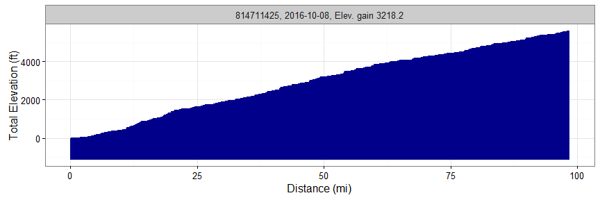

rStrava
Marcus W. Beck, mbafs2012@gmail.com, Pedro Villarroel, pedrodvf@gmail.com, Daniel Padfield, dp323@exeter.ac.uk
Linux: 
Windows:
Overview and installation
This is the development repository for rStrava, an R package to access data from the Strava API. The package can be installed and loaded as follows:
install.packages('devtools')
devtools::install_github('fawda123/rStrava')Issues and suggestions
Please report any issues and suggestions on the issues link for the repository.
Package overview
The functions are in three categories depending on mode of use. The first category of functions scrape data from the public Strava website and the second category uses the API functions or relies on data from the API functions. The second category requires an authentication token. The help files for each category can be viewed using help.search:
help.search('notoken', package = 'rStrava')
help.search('token', package = 'rStrava')Scraping functions (no token)
An example using the scraping functions:
# get athlete data for these guys
athl_fun(c(2837007, 2527465, 2140248), trace = FALSE)## $`2837007`
## $`2837007`$units
## [1] "mi" "h" "m" "ft"
##
## $`2837007`$location
## [1] "Pensacola, FL"
##
## $`2837007`$current_month
## Distance Time Elevation
## 177.80000 11.43333 3567.00000
##
## $`2837007`$monthly
## Oct 2015 Nov Dec Jan 2016 Feb Mar Apr May
## 696.976 433.832 405.384 448.056 348.488 469.392 469.392 369.824
## Jun Jul Aug Sep Oct
## 469.392 476.504 327.152 455.168 177.800
##
## $`2837007`$year_to_date
## Distance Time Elevation Gain Rides
## 3782.4000 236.8167 23323.0000 284.0000
##
## $`2837007`$all_time
## Total Distance Total Time Total Elev Gain Total Rides
## 16542.4 984.6 107858.0 1202.0
##
##
## $`2527465`
## $`2527465`$units
## [1] "km" "h" "m" "m"
##
## $`2527465`$location
## [1] "Caracas, Distrito Metropolitano de Caracas, Venezuela"
##
## $`2527465`$current_month
## Distance Time Elevation
## 15.700000 1.466667 46.000000
##
## $`2527465`$monthly
## Oct 2015 Nov Dec Jan 2016 Feb Mar Apr May
## 282.6 251.2 361.1 31.4 172.7 376.8 376.8 612.3
## Jun Jul Aug Sep Oct
## 329.7 392.5 1522.9 376.8 15.7
##
## $`2527465`$year_to_date
## Distance Time Elevation Gain Rides
## 4568.9000 245.9833 43039.0000 111.0000
##
## $`2527465`$all_time
## Total Distance Total Time Total Elev Gain Total Rides
## 12432.8000 679.4333 162701.0000 447.0000
##
##
## $`2140248`
## $`2140248`$units
## [1] "km" "h" "m" "m"
##
## $`2140248`$location
## [1] "Falmouth, England, United Kingdom"
##
## $`2140248`$current_month
## Distance Time Elevation
## 254.00 11.25 3107.00
##
## $`2140248`$monthly
## Oct 2015 Nov Dec Jan 2016 Feb Mar
## 538.238095 66.523810 0.000000 139.095238 6.047619 78.619048
## Apr May Jun Jul Aug Sep
## 399.142857 241.904762 308.428571 562.428571 320.523810 54.428571
## Oct
## 254.000000
##
## $`2140248`$year_to_date
## Distance Time Elevation Gain Rides
## 2298.80000 96.38333 27161.00000 76.00000
##
## $`2140248`$all_time
## Total Distance Total Time Total Elev Gain Total Rides
## 6837.6000 290.2833 83491.0000 477.0000API functions (token)
These functions require a Strava account and a personal API, both of which can be obtained on the Strava website. The user account can be created by following instructions on the Strava homepage. After the account is created, a personal API can be created under API tab of profile settings. The user must have an application name (chosen by the user), client id (different from the athlete id), and an application secret to create the authentication token. Additional information about the personal API can be found here. Every API retrieval function in the rStrava package requires an authentication token (called stoken in the help documents). The following is a suggested workflow for using the API functions with rStrava.
First, create the authentication token using your personal information from your API. Replace the app_name, app_client_id, and app_secret objects with the relevant info from your account.
app_name <- 'myappname' # chosen by user
app_client_id <- 'myid' # an integer, assigned by Strava
app_secret <- 'xxxxxxxx' # an alphanumeric secret, assigned by Strava
# create the authentication token
stoken <- httr::config(token = strava_oauth(app_name, app_client_id, app_secret))The API retrieval functions can be used after the token is created.
myinfo <- get_athlete(stoken, id = '2837007')
head(myinfo)## $id
## [1] 2837007
##
## $username
## [1] "beck_marcus"
##
## $resource_state
## [1] 3
##
## $firstname
## [1] "Marcus"
##
## $lastname
## [1] "Beck"
##
## $city
## [1] "Pensacola"An example creating a heat map of activities:
# get activities, get activities by location, plot
my_acts <- get_activity_list(stoken)
acts <- lapply(my_acts, function(x) x$location_city) %in% c('Pensacola', 'Pensacola Beach', 'Milton')
get_heat_map(my_acts, acts = which(acts), source = 'osm', col = 'darkgreen', size = 2)
Plotting elevation and grade for a single ride:
# plot elevation along a single ride
get_heat_map(my_acts, acts = 1, alpha = 1, add_elev = T, f = 0.1, key = mykey, size = 2, col = 'Spectral', maptype = 'satellite', units = 'imperial')
# plot % gradient along a single ride
get_heat_map(my_acts, acts = 1, alpha = 1, add_elev = T, f = 0.1, as_grad = T, key = mykey, size = 2, col = 'Spectral', expand = 5, maptype = 'satellite', units = 'imperial')
Get elevation profiles for activities:
# get activities
my_acts <- get_activity_list(stoken)
get_elev_prof(my_acts, acts = 1, key = mykey, units = 'imperial')
get_elev_prof(my_acts, acts = 1, key = mykey, units = 'imperial', total = T)
License
This package is released in the public domain under the creative commons license CC0.